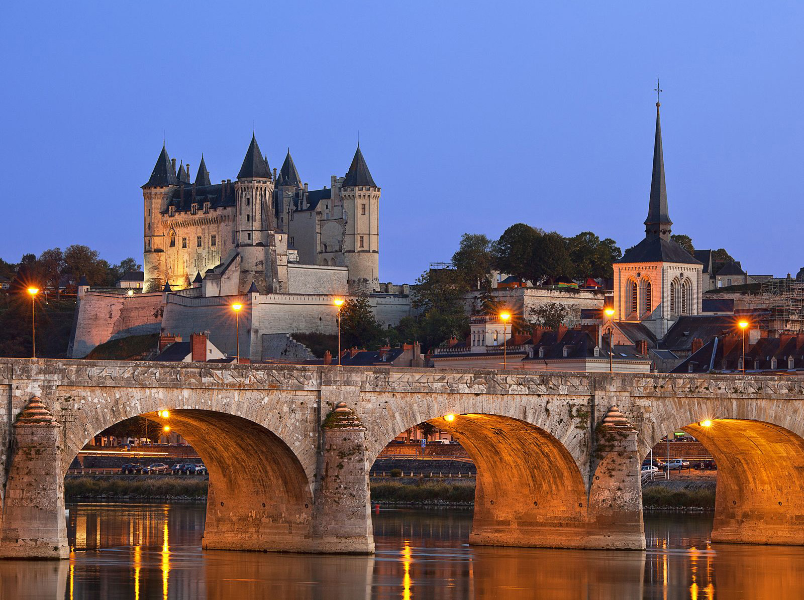

Normal img element

Image extracted via resimagecrop.php with no parameters (same as above)Image extracted via resimagecrop.php, scale 0.5Portion of image: top 15%, left 20%, width 550px, height 450pxPortion of image: top 15%, left 20%, width 550px, height 450px, scale 0.2 (resulting image is same as above with dimensions 110x90)Portion of image: top 15%, left 20%, width 1200px, height 600pxPortion of image: top 15%, left 20%, width 1200px, height 600px, scale 0.5 (resulting image is same as above with dimensions 600x300)